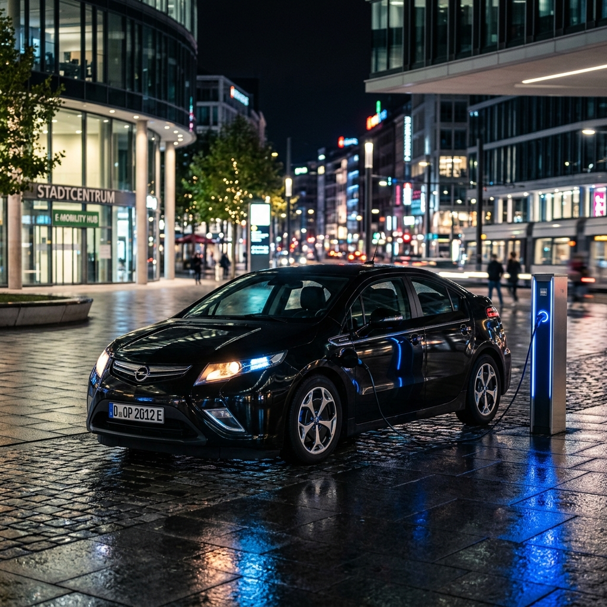

Potężna Technologia
Łączny zasięg przy wykorzystaniu silnika spalinowego jako generatora.
Płynny start bez szarpnięć i liniowe przyspieszenie charakterystyczne dla aut elektrycznych.
Codzienne dojazdy do pracy i na zakupy mogą kosztować Cię okrągłe zero złotych (przy PV).
Zdalne włączanie ogrzewania pilotem. Zapomnij o skrobaniu szyb zimą – śnieg łatwo schodzi z nagrzanego auta. Latem możesz zdalnie włączyć chłodzenie, by zawsze wsiadać do idealnie przygotowanego wnętrza.
Średnie zużycie paliwa przy połowie poziomu baterii wynosi ok. 5.3 L/100km. Przy ekonomicznej jeździe na drogach lokalnych i ekspresowych (poniżej 100 km/h), bez problemu osiągniesz wynik 4.5 L/100km, co czyni Amperę liderem oszczędności w swojej klasie.
Pojemność dostępna dla użytkownika gdy auto było nowe (2012-2014).
Typowy spadek pojemności o ok. 10–12% po 14 latach eksploatacji. To naturalny proces degradacji ogniw litowo-jonowych.
Powyżej ok. 120 km/h silnik 1.4 Ecotec łączy się mechanicznie z kołami, wspomagając silnik elektryczny. Dzięki temu auto nie "męczy się" na długich trasach.
- Niższe spalanie na autostradzie (5-6 l/100km zamiast 7-8)
- Niższe obroty – cichsza praca
- Kierowca nie czuje przełączeń – system działa automatycznie
Przy pojemności baterii ~9.0 kWh (spadek o ok. 11.8% względem nowej), Ampera wciąż oferuje realny zasięg EV.
Wskazówka: Zaleca się nie rozładowywać baterii poniżej 3 kresek na wyświetlaczu, co ogranicza zużycie paliwa i chroni ogniwa. Rekomendujemy wybór zadbanych egzemplarzy z przebiegiem ok. 200 000 km.
Ułatwia pokonywanie długich dystansów, pozwalając na utrzymywanie stałej prędkości i odpoczynek prawej nogi.
Usługa sprowadzania Opla Ampery
Marzysz o własnej Amperze? Pomożemy Ci przejść przez cały proces bezpiecznie i bez stresu. Znamy ten model od podszewki.
- Weryfikacja kondycji baterii przed zakupem
- Pełna obsługa logistyczna i formalna
- Transport auta pod Twój dom
(prowizja za kompleksową usługę)
Skonsultuj Import
lub wyślij e-mail:
say5orders@gmail.com
Potrzebujesz podobnej strony? Oferuję tworzenie customowych stron i systemów lojalnościowych. Skontaktuj się!
Dziedzictwo i Sukcesy
Ampera, bazująca na płycie podłogowej Chevroleta Volta, to prawdziwa legenda. Wraz z bliźniaczym modelem zdobyła prestiżowy tytuł Samochodu Roku 2012.
W tym samym roku udowodniła swoją niezawodność, wygrywając 13. edycję Międzynarodowego Rajdu Monte Carlo samochodów elektrycznych i z napędem alternatywnym.

Silnik Spalinowy Ecotec
Pojemność 1360 cm³, moc 86 KM (4800 obr/min) i moment 130 Nm. Działa wyłącznie jako generator, utrzymując poziom naładowania baterii.
Ładowanie w Domu
Pełne naładowanie akumulatora z domowego gniazdka 230 V zajmuje zaledwie około 4-5 godzin, co pozwala na codzienne dojazdy bez użycia kropli benzyny.
Darmowa Energia ze Słońca
Dzięki domowej instalacji fotowoltaicznej możesz ładować Amperę całkowicie za darmo, wykorzystując czystą energię prosto ze słońca.
Wyposażenie Premium
- 8 poduszek powietrznych (w tym kolanowe)
- System multimedialny z ekranem 7"
- Dostęp bezkluczykowy (Keyless)
- Światła do jazdy dziennej LED
- Odzysk energii podczas hamowania
- Automatyczna klimatyzacja i tempomat
- 17-calowe felgi aluminiowe
- System Bluetooth i czujnik deszczu
Produkcja tego pionierskiego modelu została zakończona w 2014 roku, czyniąc go dziś unikalnym i poszukiwanym klasykiem nowoczesnej elektromobilności.